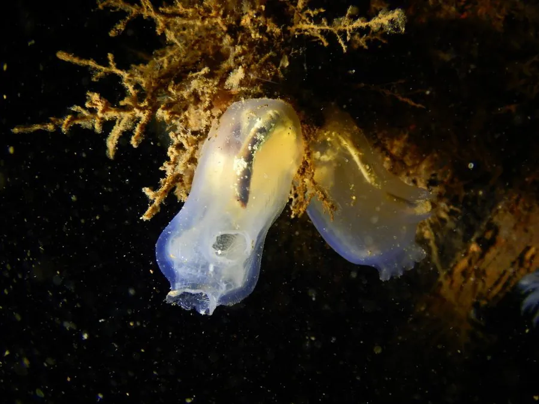

其他无脊椎动物 · 动物界
玻璃海鞘 Ciona intestinalis

半透明的海鞘，成体固着在岩石和船体上滤食，是研究脊索动物演化的模式生物，也是常见的污损生物。
- 分类
- 门脊索动物门纲海鞘纲目玻璃海鞘目科玻璃海鞘科属玻璃海鞘属
- 栖息环境
- 浅海岩礁、码头、船体和养殖设施，成体固着生活
- 地理分布
- 全球温带和寒带沿海，随航运扩散到多地
- 保护级别
- 暂无评估；常见污损生物
物种志
玻璃海鞘的成体呈长筒状，长约 5–12 cm，身体半透明，可以隐约看到内部的消化道和鳃囊，体表柔软，有入水管孔和出水管孔两个开口。它属于脊索动物门尾索动物亚门，幼体有脊索和尾，成体固着后脊索消失。
它生活在浅海岩礁、码头、船体和养殖设施上，常成群附着，靠鳃囊滤食浮游生物和有机颗粒。玻璃海鞘是研究脊索动物演化和发育生物学的经典模式生物，其基因组已被完整测序。它是一种常见的海洋污损生物，大量附着会增加船体阻力、堵塞管道，影响水产养殖；防治主要靠定期清理、防污涂料和设施维护，同时要注意避免随船体传播到新的海区。海鞘的幼体浮游期是扩散的关键阶段。
形态与习性
- 食性靠鳃囊滤食浮游生物和有机颗粒
- 体长约 5–12 cm
- 形态成体半透明筒状，有出入水管孔
- 发育幼体有脊索和尾，成体固着后脊索消失
- 科研研究脊索动物演化的模式生物
- 影响常见污损生物，增加船体阻力和管道堵塞
趣味知识
- 玻璃海鞘幼体有脊索，成体固着后脊索却消失了。
- 它是研究脊索动物演化的模式生物，基因组已被测序。
- 海鞘大量附着在船底和管道上，是常见的污损生物。